서울에서 아이를 키우는 데 필요한 정보 — 지원 제도, 야간 소아진료, 서울형 키즈카페, 교육·체험 문화행사와 육아 브랜드 행사 — 를 한 화면에서 확인하는 안드로이드 앱입니다.
Google Play 배포 준비 중 · 회원가입 없음아이를 키우면서 찾게 되는 정보가 여러 곳에 흩어져 있는데 불편함을 느꼈습니다. 관련 복지나 지원 제도를 홈페이지를 통해 일일이 찾아야 해서 놓치는 경우가 많았고, 아이랑 놀러가기 위한 장소를 찾기 위해 허비하는 시간이 많았습니다. 특히 서울형 키즈카페에 가려면 나이 제한이나, 갈 수 있는 카페가 어디가 있는지, 오늘 열었는지 확인하기가 불편했습니다. 아이가 밤에 아플 때 달빛어린이병원이 어디에 남았는지 찾는 것도 쉽지 않았습니다. 제공되는 서비스가 없는 듯 하여 육아할 때 '있었으면' 하는 서비스들을 제가 만들어보고자 했습니다.
서울형 키즈카페를 가까운 순으로 보고, 회차별 잔여 자리와 휴관 여부를 확인한 뒤 예약 페이지로 이동합니다.
박물관·미술관, 전시·공연·체험·축제, 아이가 볼 수 있는 영화를 기간·장소·요금과 함께 봅니다. 유아 편의(수유실·유모차)가 알려진 곳은 그 사실도 표시합니다.
정부·서울시의 임신·출산·육아 지원 제도를 나이·거주지역·자녀 수 같은 조건으로 걸러 봅니다.
야간·휴일에 소아 진료를 하는 병원을 가까운 순으로 보고, 오늘 진료 시간과 응급실 여부를 확인한 뒤 지도와 전화로 바로 연결합니다.
커피·편의점·베이커리·가전·육아용품 브랜드가 공개한 할인·증정 행사와, 체험학습·숙박 같은 육아 행사를 모아 봅니다.
온누리상품권·서울사랑상품권의 발행 소식과 가맹점을 봅니다. 내 주변 가맹점을 가까운 순으로, 음식점은 한식·중식 같은 갈래까지 나눠 찾습니다.
오늘 문을 연 병원, 자리가 남은 키즈카페, 곧 마감하는 행사를 한 줄씩 모아 보여 줍니다.
관심 있는 항목을 담아 두고 다시 찾아보며, 마감 전일 알림을 받습니다.
안드로이드 에뮬레이터에서 실제 서비스 데이터로 캡처한 화면입니다(2026년 9월 4일). 각 쌍의 왼쪽이 밝은 화면, 오른쪽이 어두운 화면입니다. 거리(예: 1.2km)는 서울시청을 기준으로 잰 값입니다.
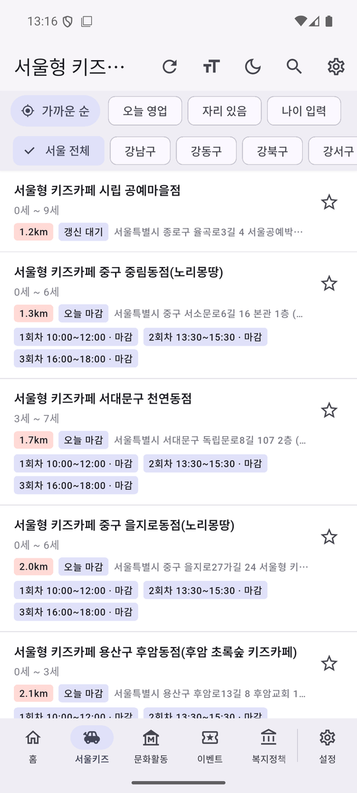
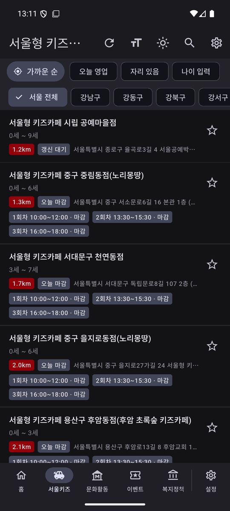
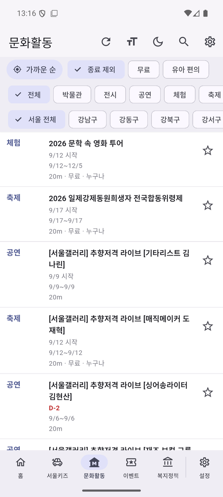
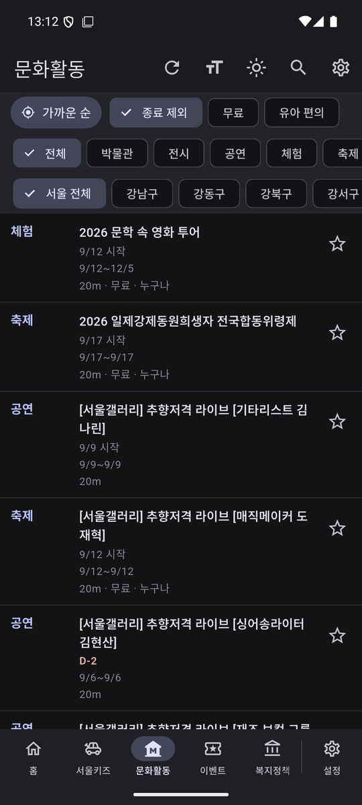
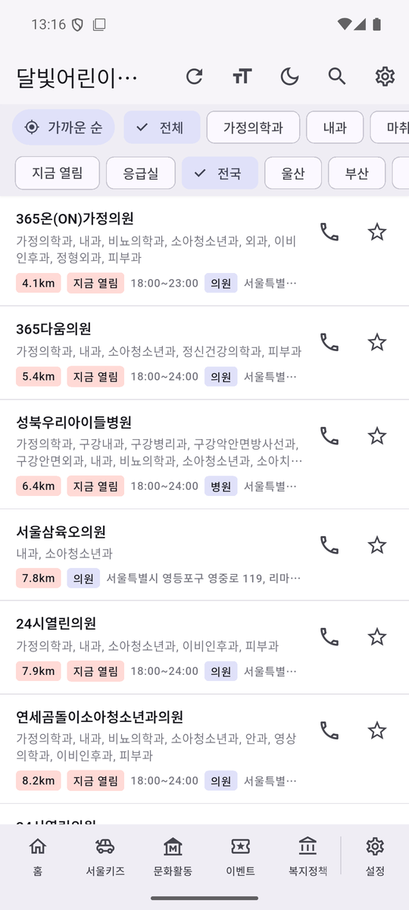
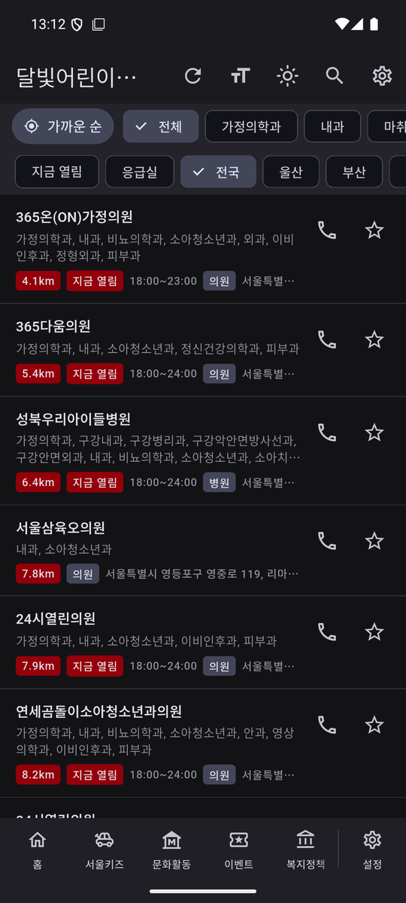
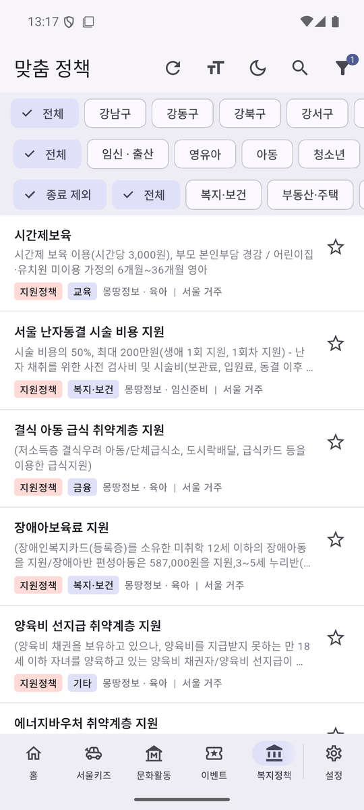
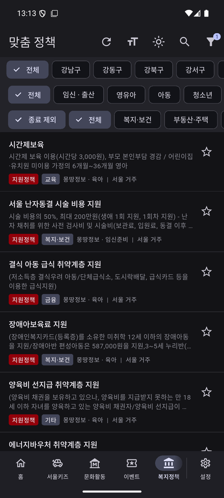
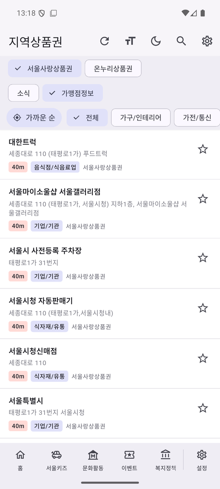
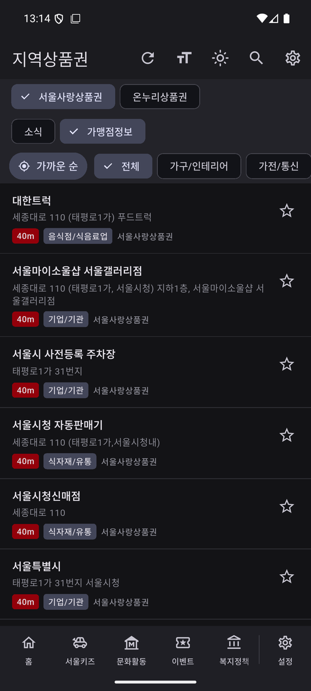
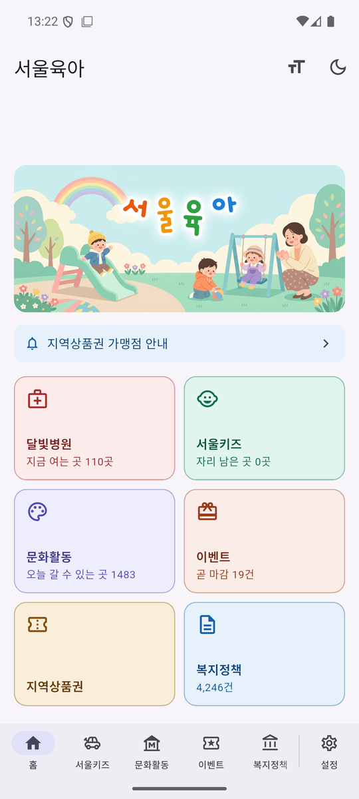
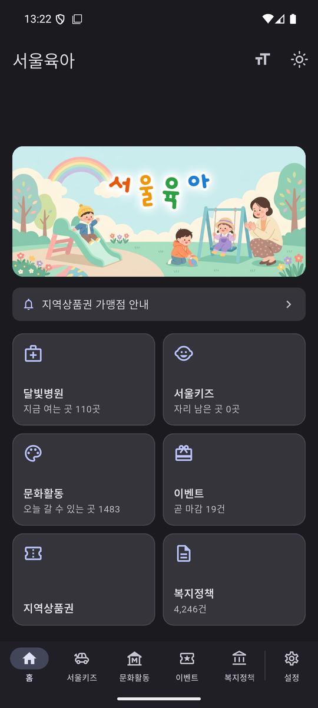
| 제공기관 | 데이터 | 사용 방식 |
|---|---|---|
| 서울특별시 | 서울형 키즈카페 시설·잔여 자리 | 시설 목록과 회차별 잔여 자리를 ‘서울키즈’ 탭에 표시하고 예약 페이지로 연결합니다. |
| 서울특별시 | 문화행사 정보 | 전시·공연·체험·축제를 ‘문화활동’ 탭에 기간·장소·요금과 함께 표시합니다. |
| 서울특별시 | 몽땅 임신·출산·육아 정보 | 서울시 육아 지원 정보를 ‘복지정책’ 탭에 함께 표시합니다. |
| 서울특별시 | 서울사랑상품권 가맹점 | ‘지역상품권’ 탭에서 내 주변 가맹점을 가까운 순으로 표시합니다. |
| 서울특별시 | 일반음식점·휴게음식점·제과점 인허가 | 가맹점 음식점에 한식·중식 같은 갈래를 붙여 찾기 쉽게 합니다. |
| 보건복지부 | 달빛어린이병원 목록 | 야간·휴일 소아 진료 병원을 ‘달빛병원’ 탭에 거리순으로 표시합니다. |
| 한국사회보장정보원 | 중앙부처·지자체 복지서비스 | 임신·출산·육아 관련 제도를 ‘복지정책’ 탭에 표시하고 조건으로 걸러 봅니다. |
| 한국고용정보원 | 온통청년 청년정책 | 청년 부모가 대상인 제도를 ‘복지정책’ 탭에 함께 표시합니다. |
| 문화체육관광부 | 정책브리핑 | 육아 관련 정책 소식을 ‘복지정책’ 탭에 표시합니다. |
| 소상공인시장진흥공단 | 온누리상품권 가맹점 | ‘지역상품권’ 탭에서 시장·가맹점을 가까운 순으로 표시합니다. |
| 지방자치단체 (표준데이터) | 전국 박물관·미술관 정보 | 위치, 운영 시간, 휴관일, 어른·어린이 관람료를 ‘문화활동’ 탭에 표시합니다. |
| 한국관광공사 | 국문 관광정보 | 표준데이터에 없는 문화시설의 위치·휴무일·유아 편의를 보완합니다. |
| 한국문화정보원 | 한눈에 보는 문화정보 | 전국 공연·전시 목록을 기간·장소·요금과 함께 표시합니다. |
| 예술경영지원센터 | 공연예술통합전산망(KOPIS) | 아동 공연의 공연명·기간·공연장·관람 연령·티켓 가격을 표시하고 상세는 원문으로 연결합니다. |
| 영화진흥위원회 | 영화관입장권통합전산망(KOBIS) | 개봉 영화 중 전체관람가 등 아이가 볼 수 있는 작품의 제목·개봉일·등급을 표시합니다. |
‘이벤트’ 탭은 각 브랜드가 자사 웹사이트에 공개한 이벤트 안내 페이지를 봅니다.
각 사이트의 robots.txt가 허용하는 범위에서만, 정해진 시각에 한 번씩 확인합니다.
브랜드명·행사명·기간을 그대로 옮기고 상세 내용은 원문으로 연결하며,
내용을 요약하거나 창작하지 않습니다.
내용 자체는 제공기관이 공개한 것을 그대로 옮기며, 요약하거나 새로 쓰지 않습니다. 다만 앱에서 쓸 수 있도록 다음의 가공을 합니다.
수집한 정보는 원문 링크와 함께 보여주며, 제공기관 표기를 항상 함께 표시합니다.
앱에 대한 문의·오류 제보·정보 정정 요청을 받습니다. 영업일 기준 며칠 안에 답신드립니다.
잘못된 정보를 발견하시면 앱 안에서도 바로 알려 주실 수 있습니다 — 각 시설·가게 상세 화면의 ‘폐업한 가게인가요? 신고하기’와 박물관 상세의 제보 버튼입니다.